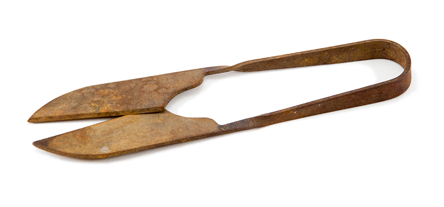
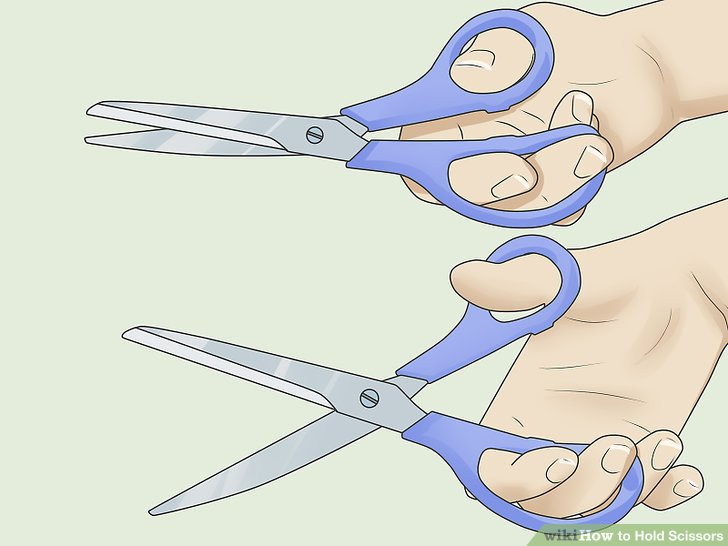

Scissors - Some Background
History of Scissors
In ancient Egypt scissors were created from a single piece of bronze held together with a metal trip. Their scissors took on the appearance of spears. In ancient Rome, scissors were created with iron as well as bronze. The Romans adapted scissors to take on the more modern-day appearance.

Back
Physical Manipulation
Scissors function by using a single hand to open and close the blades. The scissors can cut through different materials when handled correctly, which includes the correct placement of fingers and thumb on the circular components of the scissors.